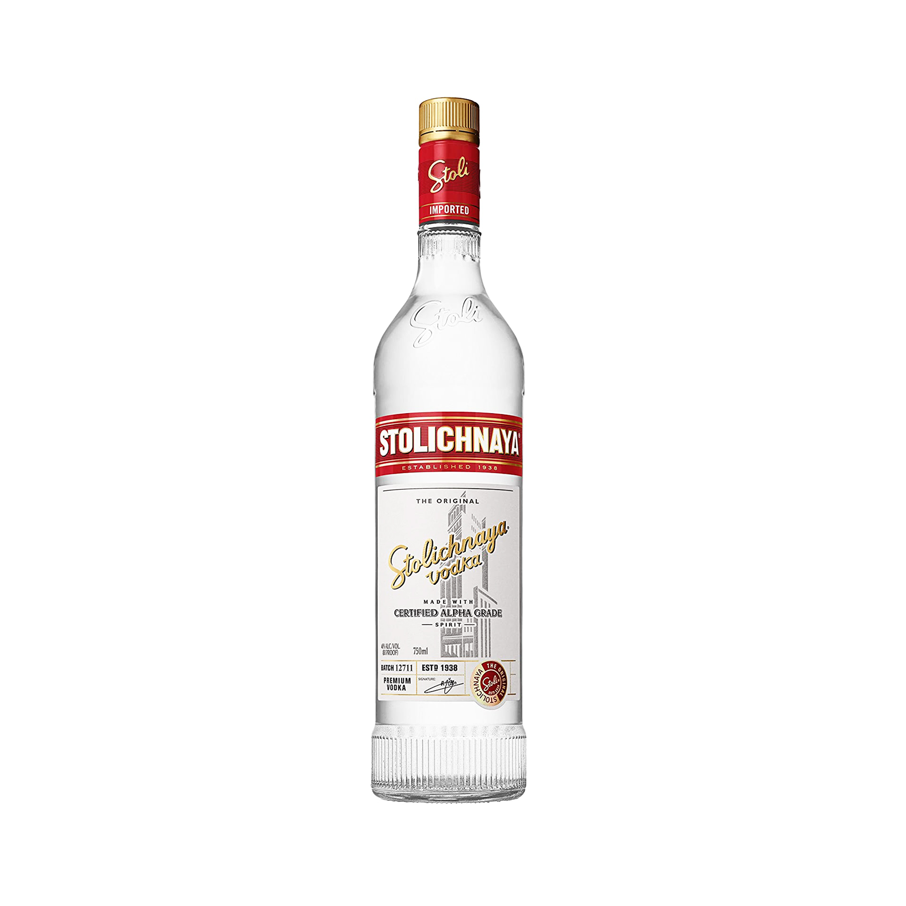
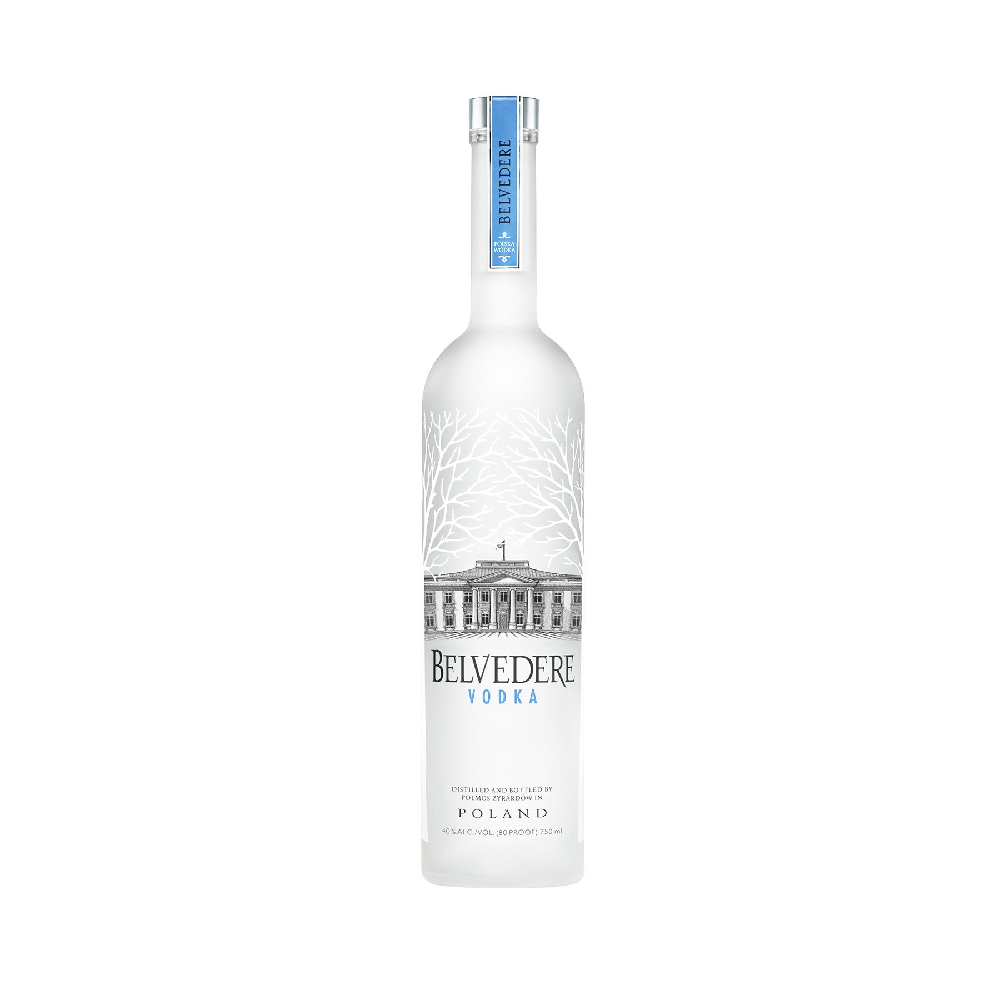
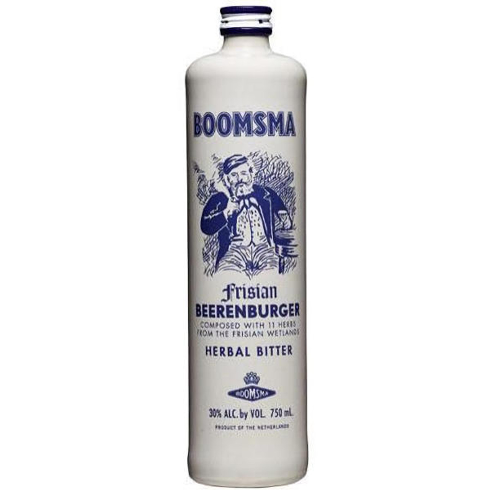
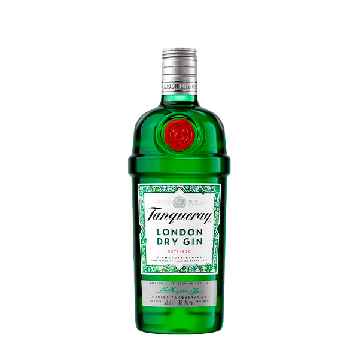
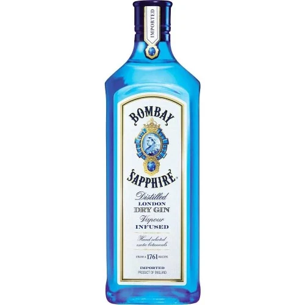

Whiskey Americano


WHISKEY Y WHISKY
VODKAS
GIN Y GINEBRAS
| producto-whiskey Americano | precio | descripcion | imagen del producto |
|---|---|---|---|
| Jacks danie´l | 110 S/ | bebida espirituosa con notas de vainilla, caramelo y roble tostado | |
| Jim Beam White | 80 S/ | whiskey de categoria bourbon con notas a vainilla, | |
| producto-whisky Escoces | precio | descripcion | iamgen del producto |
| Jhonnie Walker | 115 S/ | Se caracteriza por su estilo blended, mezcla de distintos whiskies de malta y grano |  |
|---|---|---|---|
| Chivas Regal | 90 S/ | reconocida marca de whisky escocés blended mezcla de maltas y granos con notas elegantes de miel, frutas y hierbas |  |
Vodaka rusos
| Producto-Vodka Rusos | precio | descripcion | iamgen del producto |
| Smirnof | 90 S/ | vodka con notas limpias y suaves, con un sabor neuytro y referescantte |  |
|---|---|---|---|
| Stolichnaya | 35 S/ | vodka premium, elaborado tradicionalmente a base de trigo y centeno, con un proceso de destilación y filtrado que le otorga un sabor suave, limpio y ligeramente dulce. |  |
vodka Polaco
| producto-Vodka Polaco | precio | descripcion | imagen del producto |
| Wyborowa | un vodka polaco de tradición centenaria, elaborado exclusivamente con centeno de alta calidad. limpio, suave, con ligeras notas de pan recién horneado y granos cremosa y redonda, lo que le da una sensación aterciopelada | 50 S/ |  |
|---|---|---|---|
| belbedere | aroma suave de vainilla, ligeras notas de centeno y crema en boca textura sedosa y aterciopelada, con un equilibrio entre dulzor sutil y un toque salado-mineral | 220 S/ |  |
ginebras holandesas
| producto-ginebra holanda | precio | descripcion | imagen de producto |
| Bols Genever | 40 S/ | Malt Spirit es el corazón de Ginebra, Queremos mostrar nuestro espirituoso de malta único en su forma más pura |  |
|---|---|---|---|
| Boomsma | 100 S/ | bebida espirituosa holandesa hecha con ginebra y hierbas notas enebro fresco, notas herbales y toques cítricos |  |
ginebras Inglesas
| producto-gin ingles | precio | descripcion | imagen de producto |
| Tanquerey london dry | 80 S/ | enebro (muy predominante), cilantro, raíz de angélica y regaliz. |  |
|---|---|---|---|
| Bombay Sapphire | 80 S/ | bebida espirituosa holandesa hecha con ginebra y hierbas notas enebro fresco, notas herbales y toques cítricos |  |